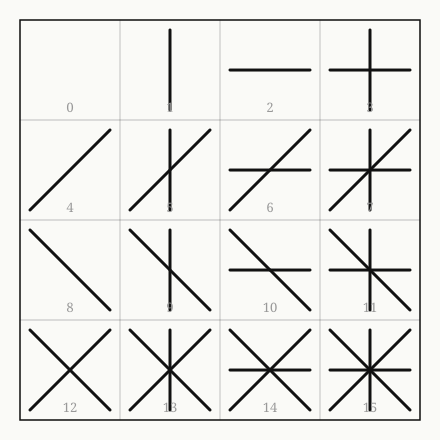
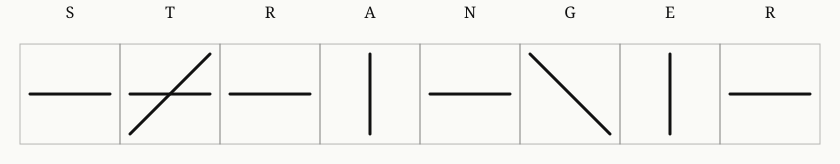

A procedure for transliterating any word into strokes, meant to be carried out with a pencil and a sheet of squared paper. Nothing on this page needs to run. Read it, then do it.
A word or short phrase — your name, a place, whatever you like. A pencil. A strip of squared paper, or graph paper, with cells large enough to draw two crossing lines in.
For each letter of your word, in order, ask these four yes/no questions. Each answer is fixed by this instruction — it is not a judgment call, and not a claim about how the letter looks in any particular typeface. It is simply how this instruction has chosen to sort the alphabet.
Every letter gets exactly one answer to each question (no letter is on two lists). Four yes/no answers make a four-digit binary number — a code from 0 to 15.
Each of the four questions owns one stroke. If the answer was yes, draw that stroke in the cell; if no, leave it out.
A letter that answers yes to two questions gets two strokes, crossing. A letter that answers yes to none (like c or m) gets an empty cell — draw its outline, but put nothing inside. Anything in your word that isn't one of the 26 letters — a space, an apostrophe, a digit — also gets an empty cell.
Here are all sixteen possible cells, for reference, numbered by their code:

I chose the word STRANGER and did this by hand before writing the script that redrew it precisely. Each column below is one letter of that word, in order.

For checking your own work, or checking mine. Every lowercase letter, its four answers, and the code they add up to (1 + 2 + 4 + 8, whichever apply):
| a | b | c | d | e | f | g | h | i | j | k | l | m |
|---|---|---|---|---|---|---|---|---|---|---|---|---|
| 1 | 4 | 0 | 4 | 1 | 4 | 8 | 4 | 1 | 8 | 4 | 4 | 0 |
| n | o | p | q | r | s | t | u | v | w | x | y | z |
| 2 | 3 | 10 | 10 | 2 | 2 | 6 | 3 | 2 | 2 | 2 | 10 | 2 |